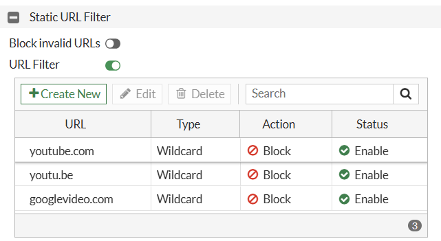
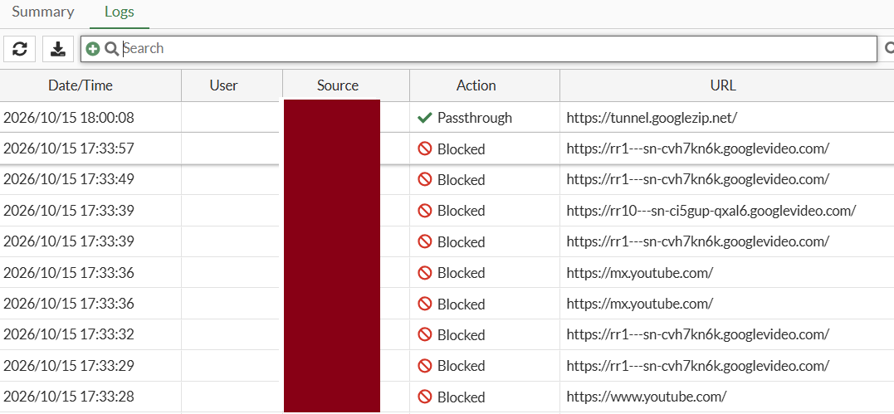

Block a URL on FortiGate Using Web Filter
Overview
FortiGate Web Filter allows network administrators to block access to specific websites www.youtube.com, domains, and URL paths.
Configuration workflow
Step 1 — Create the URL filter
Security Profiles → Web Filter
Step 2 — Apply the Web Filter profile
Policy & Objects → Firewall Policy
Step 3 — Test and verify
Step 1. Create a Web Filter profile
-
Log in to the FortiGate administrative GUI.
-
Navigate to Security Profiles → Web Filter.
-
Click Create New
-
Enter a profile name, for example,
Block_Youtube. -
Locate the Static URL Filter section.
-
Enable URL Filter.
Add the URL to block
In the Static URL Filter section:
-
Click Create New.
-
Enter the URL pattern.
www.youtube.com -
Select the filter type Wildcard.
-
Set the action to Block.
-
Set the status Enabled.
-
Save the entry and then save the profile.
Use the following example configuration:
| Field | Value |
|---|---|
| URL | www.youtube.com |
| Type | Wildcard |
| Action | Block |
| Status | Enabled |

Step 2: Apply the Web Filter to a firewall policy
A URL filter will not protect users unless the applicable traffic passes through a firewall policy with the Web Filter profile enabled.
-
Go to Policy & Objects → Firewall Policy.
-
Find the policy that allows LAN users to access the Internet (LAN-to-WAN).
-
Click Edit.
-
Locate the Security Profiles section.
-
Enable Web Filter.
-
Select the
Block_Youtubeprofile created earlier. -
Select
certificate-inspectionunder SSL Inspection, as an initial configuration. -
Click OK to save.
Use the following example configuration:

Step 3: Test & Verify
From a client computer connected through the FortiGate:
-
Open a browser.
-
Navigate to
https://www.youtube.com. -
Confirm that access is blocked.
-
Test another website to verify that general Internet access still works.
Expected result
Blocked website- The browser should display a FortiGate block or replacement page, or the request may fail depending on the inspection and browser configuration.
Other websites should be run- Websites not matched by a blocking rule should remain accessible.
Check Web Filter logs
If the website is still accessible, check the logs:
-
Navigate to Log & Report → Security Events.
-
Open the Web Filter events.
-
Filter for the client's source IP address or the destination hostname.
-
Review the action, matched URL, profile, and policy ID.
-
Look for an entry with an action such as
blockedand a message indicating that the URL matched the local URL filter.

Reference: Fortinet's FortiOS 7.4.8 Administration Guide. Your interface may differ slightly. Official reference: Fortinet — Static URL Filter and verification
Block a URL on FortiGate Using CLI
Overview
FortiGate firewalls allow administrators to block specific websites using the Web Filter feature. In addition to the graphical user interface (GUI), this configuration can be performed through the Command Line Interface (CLI).
In this guide, we will configure a Static URL Filter to block YouTube, create a Web Filter profile, and apply the profile to an existing LAN-to-WAN firewall policy.
Objective
-
Create a Static URL Filter using CLI.
-
Configure a URL-blocking rule.
-
Create a Web Filter profile.
-
Apply the profile to a firewall policy.
-
Verify that the website is blocked.
Prerequisites
Before starting, ensure that:
-
You have administrative access to the FortiGate firewall.
-
You can access the FortiGate CLI through the GUI console, SSH, or a console connection.
-
A LAN-to-WAN firewall policy already exists.
-
You have identified the firewall policy ID used for Internet access.
Example configuration:
| Parameter | Value |
|---|---|
| Website to block | youtube.com |
| URL Filter Table ID | 10 |
| URL Filter Table Name | Block_Youtube_List |
| Web Filter Profile | Block_Youtube |
| Example Firewall Policy ID | 1 |
Note: Policy ID _1_ is only an example. Use the actual ID of your Internet-access policy.
Step 1: Access the FortiGate CLI
Log in to the FortiGate firewall using SSH, a console connection, or the CLI Console available in the web interface.
Once logged in, you can configure the Web Filter settings using CLI commands.
Step 2: Create a Static URL Filter
First, create a URL filter table and add a rule to block YouTube.
config webfilter urlfilter
edit 10
set name "Block_Youtube_List"
config entries
edit 1
set url "*youtube.com"
set type wildcard
set action block
set status enable
next
end
next
end
Explanation
-
config webfilter urlfilter— Enters the URL filter configuration. -
edit 10— Creates or edits URL filter table ID 10. -
set name "Block_Youtube_List"— Assigns a name to the URL filter table. -
set url "*youtube.com"— Defines the URL pattern to match. -
set type wildcard— Uses wildcard matching. -
set action block— Blocks matching URLs. -
set status enable— Enables the URL filter entry.
The wildcard pattern is intended to match URLs containing the specified domain pattern. Validate the matching behavior on your FortiOS version, and add any additional domain patterns required for your blocking objective.
Step 3: Create a Web Filter Profile
Next, create a Web Filter profile and associate it with the URL filter table created in the previous step.
config webfilter profile
edit "Block_Youtube"
config web
set urlfilter-table 10
end
next
end
Explanation
-
config webfilter profile— Enters Web Filter profile configuration. -
edit "Block_Youtube"— Creates or edits the profile. -
set urlfilter-table 10— Associates URL filter table ID 10 with the profile.
The profile now references the URL filter rules configured in Step 2.
Step 4: Identify the Firewall Policy ID
Before applying the profile, identify the existing firewall policy that allows users to access the Internet.
Run:
show firewall policy
Review the output and identify the relevant LAN-to-WAN policy.
For this example, we will use policy ID 1. Your actual policy ID may be different.
Important: Do not create a new policy or modify unrelated policy settings unless required by your network design.
Step 5: Apply the Web Filter Profile to the Firewall Policy
Apply the profile to the existing Internet-access policy.
config firewall policy
edit 1
set utm-status enable
set webfilter-profile "Block_Youtube"
next
end
Replace 1 with the actual firewall policy ID identified in Step 4.
Explanation
-
set utm-status enable— Enables security profile inspection on the policy. -
set webfilter-profile "Block_Youtube"— Applies the Web Filter profile to the policy. -
next— Saves the changes to the current policy entry. -
end— Exits the configuration context.
Important: If the policy uses a Security Profile Group or other centralized security-profile configuration, check the existing configuration before applying an individual Web Filter profile. Avoid unintentionally changing other security settings.
Step 6: Verify the Configuration
After applying the configuration, verify that the URL filter table, Web Filter profile, and firewall policy contain the expected settings.
Verify the URL Filter Table
config webfilter urlfilter
edit 10
show
next
end
Confirm that the URL pattern is correct and the entry is enabled.
Verify the Web Filter Profile
config webfilter profile
edit "Block_Youtube"
show
next
end
Confirm that URL filter table ID 10 is associated with the profile.
Verify the Firewall Policy
show firewall policy
Confirm that the relevant Internet-access policy has Web Filter inspection enabled and references the intended profile.
Step 7: Test the Configuration
After verification, test the configuration from a client connected to the LAN.
-
Open a web browser on the client PC.
-
Try accessing
https://www.youtube.com. -
Confirm whether access is blocked.
-
Test another permitted website to ensure normal Internet access still works.
-
Review the FortiGate Web Filter logs, if available, to identify the matching URL and the action taken.
If YouTube remains accessible, do not assume the URL filter is configured incorrectly immediately. Check the traffic path, policy matching, inspection settings, and domain matching behavior.
Troubleshooting
| Issue | What to check |
|---|---|
| Website is still accessible | Verify the matching firewall policy and its Web Filter profile. |
| URL filter rule is not working | Confirm the URL pattern, filter type, and entry status. |
| Other websites are also blocked | Review the URL pattern and any other rules in the filter table. |
| Web Filter logs are missing | Verify logging settings and check the appropriate log view. |
| HTTPS traffic is not filtered as expected | Review the SSL inspection profile and the visibility available for encrypted traffic. |
Important Notes
-
The Web Filter profile must be applied to the firewall policy handling the client's traffic.
-
URL matching behavior can vary according to the pattern and FortiOS version.
-
HTTPS inspection capabilities depend on the SSL inspection configuration.
-
Some applications use additional domains, content delivery networks, or alternate endpoints. Blocking one domain may not block every part of an application.
-
Test changes in a controlled environment before applying them to production networks.
Conclusion
Blocking a website on FortiGate using CLI involves three main tasks: configuring a Static URL Filter, associating it with a Web Filter profile, and applying that profile to the appropriate firewall policy.
Using CLI allows administrators to configure and verify these settings efficiently without navigating through the graphical interface.
Related Guide: Block a URL on FortiGate Using Web Filter (GUI)
Official Documentation: Fortinet Documentation